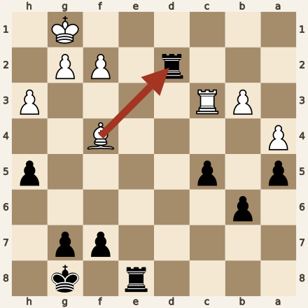

아지트체스, 한 번 가볼 만하다.
핵심은 내 대국을 함께 복기할 수 있느냐다.
lsc4719에게는 상담·체험 방문을 추천한다. 이미 Chess.com 래피드 1206에 도달했으므로, 규칙 입문보다 실제 보드에서 수를 설명하고 실수를 교정하는 수업의 가치가 크다. 성인 수업의 현재 운영 여부와 개인 기보 복기 가능 여부를 먼저 확인하고 방문하자.
1. 실력이 부족해서 못 갈 곳인가? 그럴 근거는 없다.
Chess.com 공개 API를 이번에 확인한 결과 래피드 현재·최고 레이팅은 모두 1206이고, 해당 마지막 대국은 한국 시각 11월 27일 00:38:35에 끝났다. 기존 11월 분석 자료에는 10분 래피드 480국, 242승·26무·212패가 기록돼 있다. 온라인 실전 경험이 이미 충분히 쌓여 있어 자신의 대국을 수업 자료로 쓸 수 있는 단계다.
아지트체스의 업체 소개에는 입문부터 심화·대회 준비·성인 프로그램이 있다. 따라서 레이팅 때문에 방문을 미룰 이유보다는 내 수준에 맞는 반과 피드백 방식이 실제로 있는지가 더 중요하다. 다만 1206을 FIDE 레이팅이나 학원 반 등급으로 환산하거나, 현장 회원보다 잘 둘 것이라고 예측할 수는 없다.
처음 실제 보드로 두면 예상되는 경험
온라인에서는 익숙한 비숍 대각선도 실제 판에서는 한 번 더 살펴야 할 수 있다. 시계 누르기와 기보 기록에도 적응이 필요할 수 있다. 오프라인 대국 경험은 확인되지 않았으므로 이는 가능한 적응 과정이며, 첫날 승패만으로 실력을 다시 평가할 필요는 없다.
취미와 교류가 목적이라면 같이 둘 사람이 오는 시간이 핵심이다. 실력 향상이 목적이라면 한 판 뒤에 “왜 그 수를 골랐는지”를 들어 주는 코치가 핵심이다. 자유 대국 이용권이 있다는 사실만으로 방문 시간에 상대가 보장되지는 않는다.
2. lsc4719가 가져갈 수업 주제는 이미 있다.
기존 보고서의 실전 사례를 보면, 이번 방문에서 시험할 만한 가치는 새로운 오프닝 이름보다 알고 있는 위협을 실제 판에서 놓치지 않는 사고 습관이다. 아래 장면은 기존 분석을 재사용한 상담 자료이며, 소수 사례를 모든 패배의 원인으로 일반화한 진단은 아니다.

“룩이 걸린 걸 왜 못 봤을까?”
실전에서는 30...h4 뒤 31.Bxd2로 룩을 잃었다. 기존 분석의 개선 후보는 30...Rd7이다. 코치에게는 정답만 묻지 말고, 당시 폰을 밀고 싶었던 이유를 설명한 뒤 상대의 마지막 수 → 새로 생긴 공격 → 내 후보 수 순서로 다시 생각해 보자.
체험에서 확인할 것: 코치가 설명한 뒤, 판을 돌려 놓고도 내가 f4–e3–d2 대각선을 스스로 짚는가? 비슷한 새 배치에서도 같은 점검을 하는가?
이긴 판도 가져가면 좋다
bradetic1전에서는 1.e4 e5 2.Nf3 d6 3.Bc4 Qe7 뒤 4.Ng5? Qxg5로 나이트를 잃고도 나중에 이겼다. 이 장면은 결과가 좋아도 사고 과정을 고쳐야 한다는 사례다. 실제 보드에 놓고 “g5를 누가 공격하는가?”를 설명해 보면 수업이 자신의 빈틈을 다루는지 확인하기 좋다. 기존 개선 후보는 4.O-O이며, 상세 수순과 비교판은 기존 분석에서 볼 수 있다.
추가로 scz40전의 중간 체크·되잡기 사례를 가져가면 단순 기물 방치와 계산 중 놓친 수를 구분해 상담할 수 있다. 수업 요청은 “전술을 가르쳐 주세요”보다 “제 기보에서 놓친 체크와 공격을 실제 판에 놓고, 제가 다시 설명하게 해 주세요”가 구체적이다.
3. 공개된 운영 정보와 아직 물어봐야 할 것
업체가 직접 관리하는 당근 소개의 검색 결과와 학원 정보 페이지를 대조했다. 당근 페이지의 표시상 마지막 수정일은 2026년 9월 7일이다. 아래는 현재 견적·예약 확정 정보가 아니다.
- 위치
- 동탄대로 446, 그란비아스타 6층 6109호. 사용자 제공 주소와 업체의 확장이전 공지가 일치한다.
- 성인 수업
- 프로그램 소개에 기재. 실제 개설 요일, 재학생 수준·연령 구성, 개인 지도 여부는 미확인.
- 수업료
- 정규 프로그램은 주 1회 80분·월 4회 기준 15만 원부터로 소개된다. 성인·지도자 프로그램은 별도 문의이므로 15만 원을 성인반 가격으로 적용하면 안 된다.
- 자유 대국
- 월 이용권은 회원 10만 원부터, 비회원 15만 원부터로 소개된다. 이용 가능 시간·예약·상대 매칭·레슨 포함 여부는 확인해야 한다.
- 운영일
- 당근 소개에는 일·월요일 휴무로 표시된다. 다른 정보 페이지의 과거 소식에는 일요일 수업 안내도 있어, 특히 일요일 방문은 최신 일정 확인이 필요하다.
- 코치·평판
- 학원 소개에는 FIDE 트레이너·레이팅 보유 코치 문구가 있다. 담당자 이름과 자격을 이번 조사에서 독립 검증하지는 못했다. 학원의신 리뷰가 0건이라는 사실은 수업 품질 평가 근거가 되지 않는다.
네이버지도 단축 링크와 공식 블로그 본문은 접근 제한으로 직접 확인하지 못했다. 업체 등록 정보의 검색 노출문을 활용했으므로 가격·휴무는 출발 전 다시 확인하는 것이 좋다.
4. 먼저 이렇게 문의하고, 체험 뒤 결정하자.
다음은 직접 보낼 수 있는 문의 초안이다. 이번 작업에서 업체에 연락하거나 예약하지는 않았다.
안녕하세요. Chess.com 아이디 lsc4719이고 래피드는 현재 1206 정도입니다. 규칙 입문보다는 제 대국의 기물 방치와 계산 실수를 실제 보드로 복기하고 싶습니다. 제 수준에 맞는 수업이나 성인 대국 시간이 있을까요? 개인 기보 복기 가능 여부, 체험 가능 여부와 비용, 정규 수업 총비용을 알고 싶습니다. 자유 대국 때 비슷한 수준의 상대도 만날 수 있는지, 방문 가능한 요일과 주차 지원도 알려 주세요.
첫 방문에서 할 일
- 기보 3개 준비: 룩을 잃은 Chanel_Nine전, 이겼지만 초반 나이트를 잃은 bradetic1전, 되잡기 계산이 무너진 scz40전. 각 판에 “여기서 무슨 생각을 했는지” 한 문장씩 적는다.
- 복기와 대국을 함께 요청: 가능한 시간 안에서 실제 보드 복기와 시계 대국을 모두 경험한다. 15+10 같은 증분 대국은 제안해 볼 형식이며, 학원의 제공 프로그램으로 확인된 것은 아니다.
- 집에 와서 다시 설명: 교정받은 한 장면을 정답 없이 재현하고, 다음 온라인 대국에서 쓸 점검 문장 하나를 적는다. 수업이 끝난 뒤 혼자 적용할 수 있어야 한다.
등록 판단은 이 세 가지로
- 배움이 남았나
- 내 수를 고른 이유에 구체적인 피드백이 있었고, 집에서도 같은 위협을 설명할 수 있다면 단기 수강을 검토한다.
- 사람을 만났나
- 계속 함께 둘 상대와 정기적으로 겹치는 시간이 확인되면 자유 대국의 가치가 생긴다. 수업만 있거나 방문 시간에 상대가 없으면 교류 목적에는 맞지 않을 수 있다.
- 계속 갈 수 있나
- 수강료 외 교통·주차비와 왕복 시간을 함께 계산한다. 출발지가 없어 통근 적합성은 판단하지 않았다. 장기 등록은 실제 방문 부담을 경험한 뒤 결정한다.
추천 순서: 수준·기보 복기·비용 확인 → 가능한 체험 1회 → 도움이 되면 짧게 수강. 회원권이나 대회 과정 선택은 그다음이다. 예상 레이팅 상승 폭과 현장 승률은 근거가 없어 제시하지 않는다.
근거 자료
- Chess.com lsc4719 공개 통계 — 이번 조사에서 API 직접 확인. 래피드 현재·최고 1206.
- 기존 11월 대국 집계 · 실전 세 장면과 개선 수 — 2026-11-27 작성 자료. 통계 범위는 UTC 11월 아카이브이며 한국 달력의 11월 전체가 아니다. 새 엔진 분석은 수행하지 않았다.
- AZT체스 당근 업체 소개 — 업체 관리자 등록 정보의 검색 결과. 프로그램·가격·휴무·이전 공지.
- 학원의신 AZT 아지트체스 소개와 소식 — 주소·성인 프로그램 소개, 과거 일요일 수업 공지. 외부 등록 정보.
- Seoul Chess 장소 안내 — 업체 소개를 재인용한 보조 자료. 실제 성인 시간표 확인 근거로 사용하지 않았다.
확인일: 2026-11-27 (한국 시각). 방문 적합성은 공개 기록을 바탕으로 한 판단이며 실제 수업을 체험한 후기가 아니다.